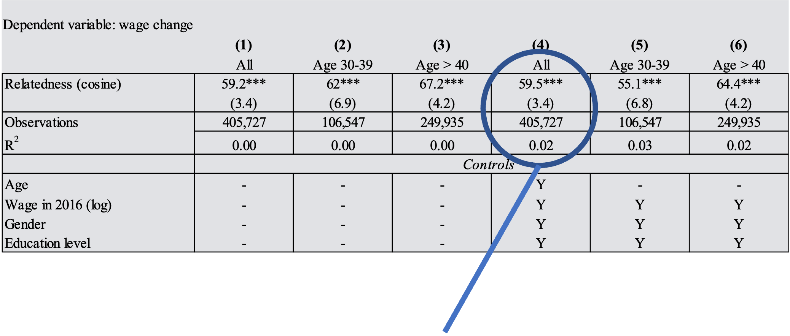

Skills, jobs and regional coherence
Measuring skill relatedness and specialization using information from two million job postings
by Martin Henning, Petrus Garefelt,
Hanna Martin and Zoltán Elekes
This research was funded by FORTE through the
Swedish Labour Mobility Lab
Background of our research
From the literature, we have a strong hunch that the local composition of skills matter a lot to regional development
Regions organizational platform for collective knowledge: there is more to local skills than the presence of isolated individuals (complementaries and spillovers)
Regions as coherent labour markets (attraction of labour and employers, and smoother job transitions)
The value of specific strong 'domains of skills' within larger local diversity seems to be especially important (clusters within larger cities)
But is very difficult to map local economies’ skill ecology in a way that makes empirical and practical sense
Because skills are difficult to measure anyhow
Because the standard statistical categories portrays ’domains of skills’ as isolated units (educational levels, industries, occupations)
Game-changer: big data access and increasingly user-friendly methods
Idea with this paper
If we are able to map the present skill domains of a local economy, are local economies skills coherent, or do they rather consist of disparate and maybe complementary skills?
As regional labour markets develop across time, do they develop in coherent ways (pushing economies towards specific domains of knowledge), and how is that linked to the coherence of the existing local economy?
How does this ’labour market push’ strategy matter for regional wealth?
To assess this, we need
a reasonably good way to pinpoint skills in jobs
a measure that assesses how related jobs are to each other (’domains of skills’)
data on local portfolios of jobs (indication of locally present skills)
Skills jobs and skill-relatedness between jobs
Text in Swedish job ads 2019-2021 from the Swedish Public Employment Service
Identification of ”skill tokens” in jobs (occupation*industries)
Machine learning to assess relatedness (skill similarity between jobs)
Combined with local economic data from Statistics Sweden
A network layout of the skill-relatedness measure
Validity
More related job combinations are more likely to have higher job switch frequencies
Job-combination relatedness
Relative job switch freq
People that move between related jobs earn a higher wage premium

Job-combination relatedness’ impact on wage premiums
Results: local portfolio skill-coherence
Coherence is the average skill-relatedness between all jobs in a municipality
80% of local economies have a higher skill-coherence than the national average
Existing local portfolio coherence vs. local coherence in the ads (push in local ’skill domains’)
If we are able to map the present skill domains of a local economy, are local economies skills coherent, or do they rather consist of disparate and maybe complementary skills?
As regional labour markets develop across time, do they develop in coherent ways (pushing economies towards specific domains of knowledge), and how is that linked to the coherence of the existing local economy?
How does this ’labour market push’ strategy matter for regional wealth?
The ratio between portfolio coherence and ad coherence is a sign of the labour market-push coherence of local economies
Matters significantly to local economic wealth the higher ad coherence, the better the
local wage growth
Reflects expansion of more coherent and specialized sections of local labour markets...
...or high demand for a special type of labour
Could take place within diverse cities as well
Conclusions
Information embedded in geo-coded job ads is a great resource for deriving information about
'skill domains' present in local economies
the direction in which the local economy pushes its labour market frontier
Local economies are highly coherent in terms of present skill domains
The smaller the local economy, the more coherent
The coherence of local economies are not correlated with the coherence of published local job ads
But the more coherent the job ads, the more successful the local economy
Reflects coherent labour market push of larger regions (spillovers, building a credible local labour market in a specific field)
Game-changer in regional skills research
Thank you!